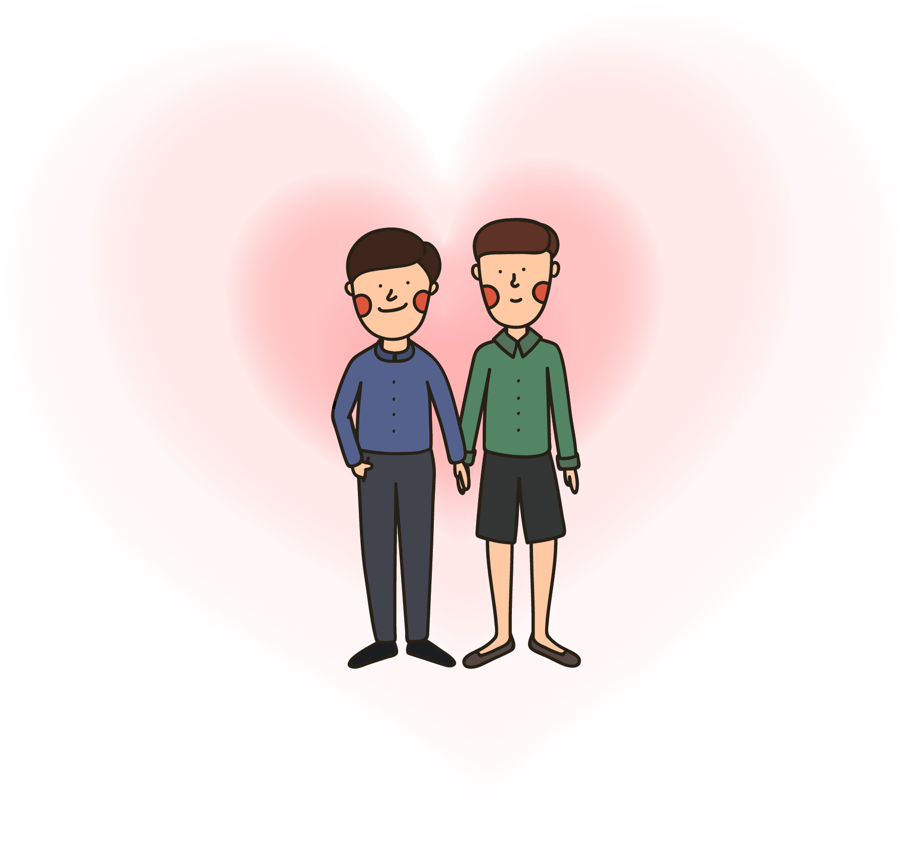
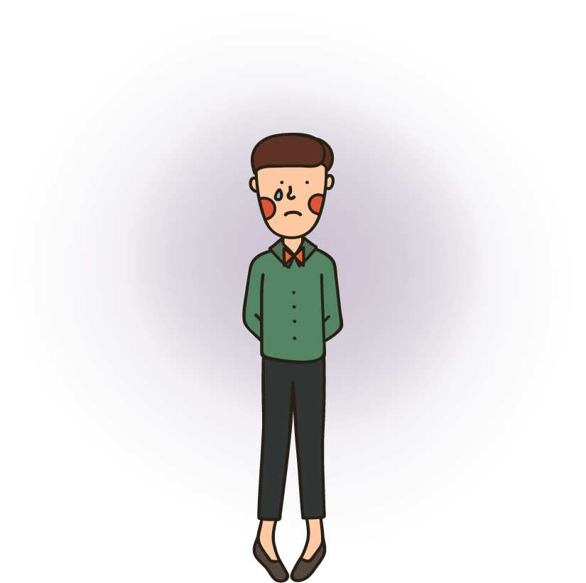
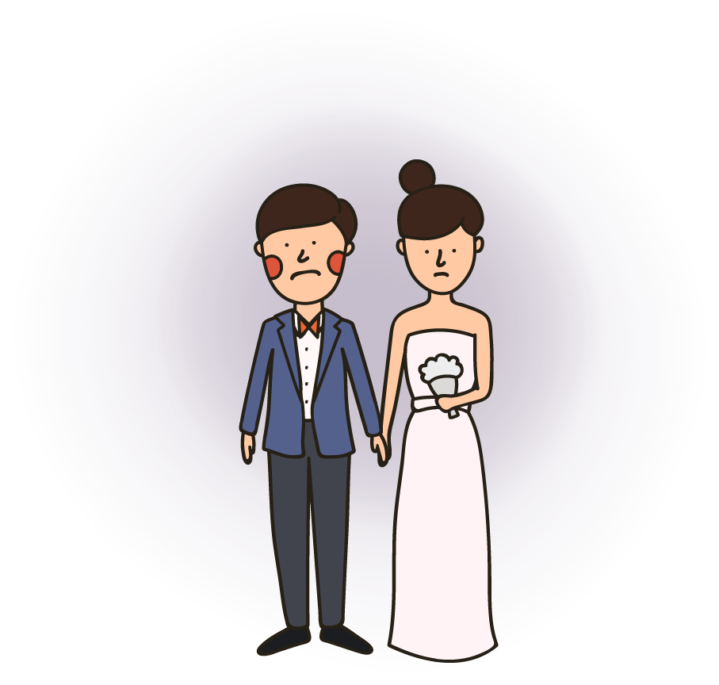
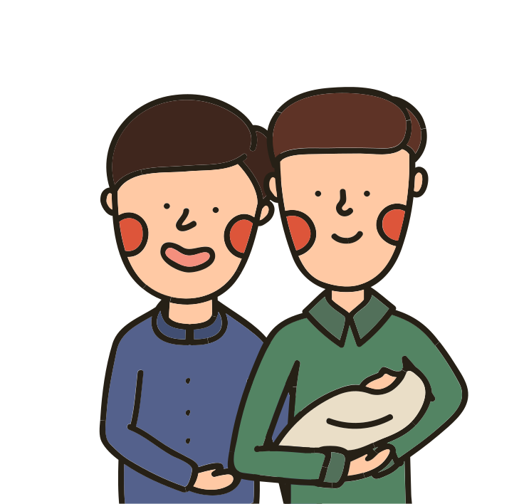
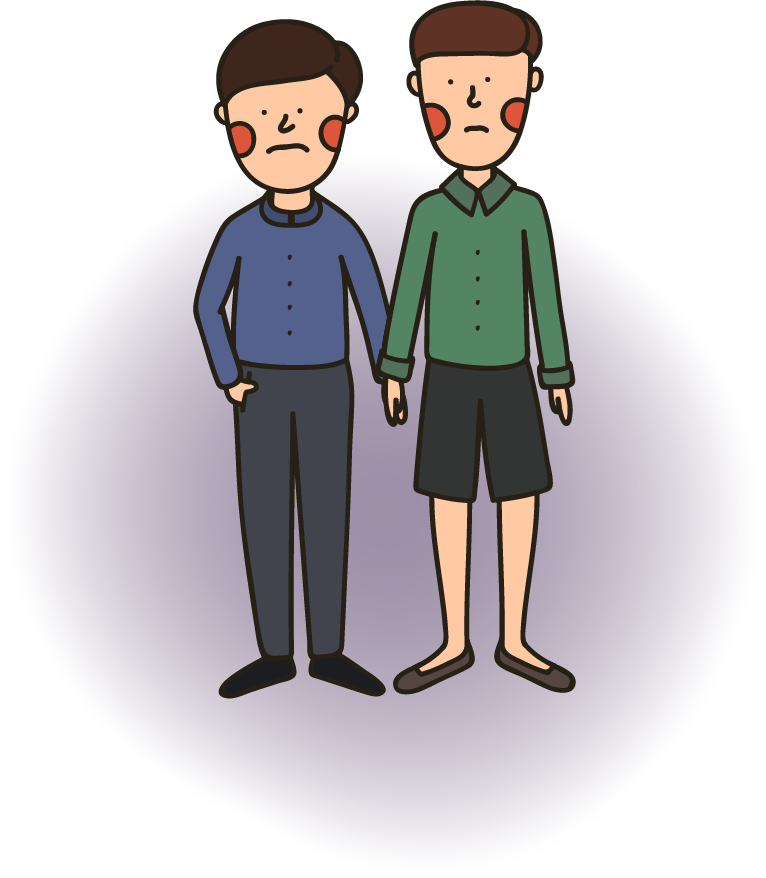
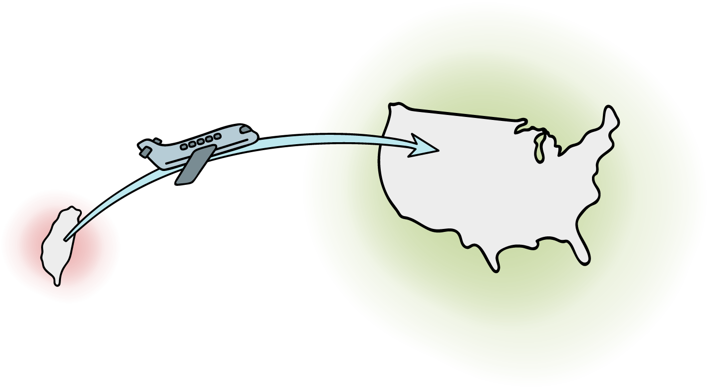
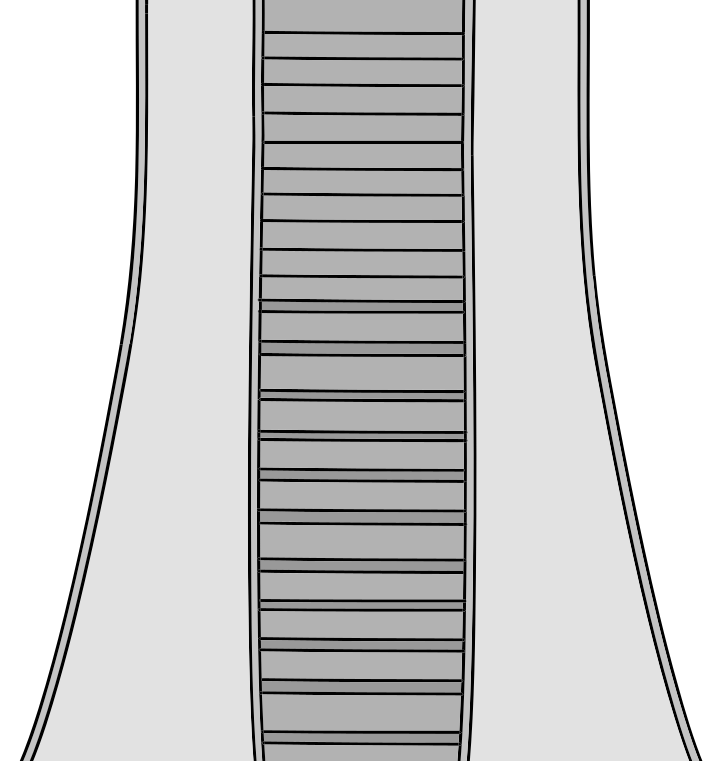
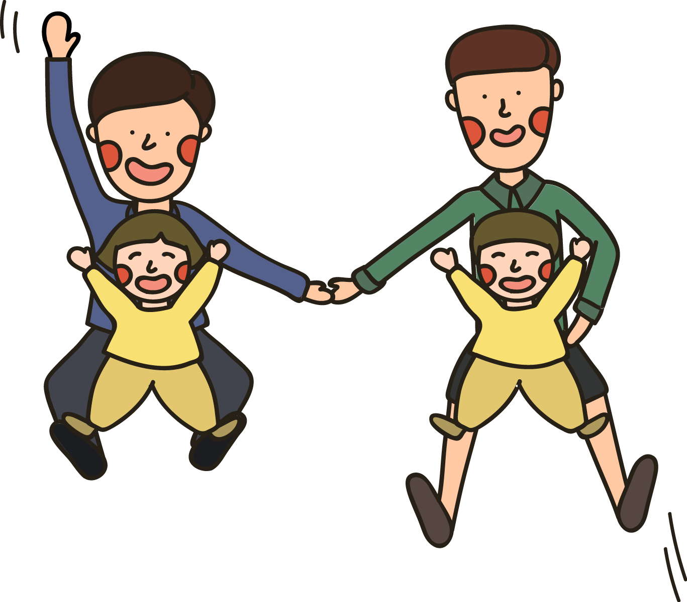
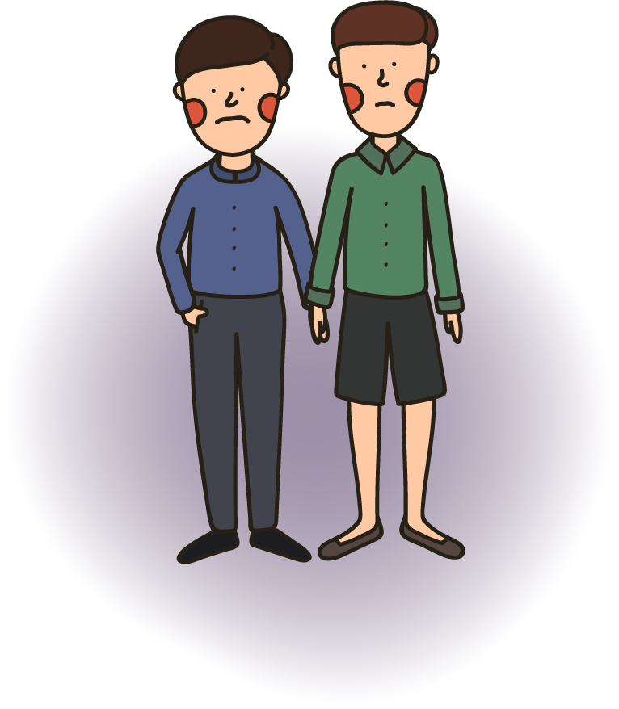
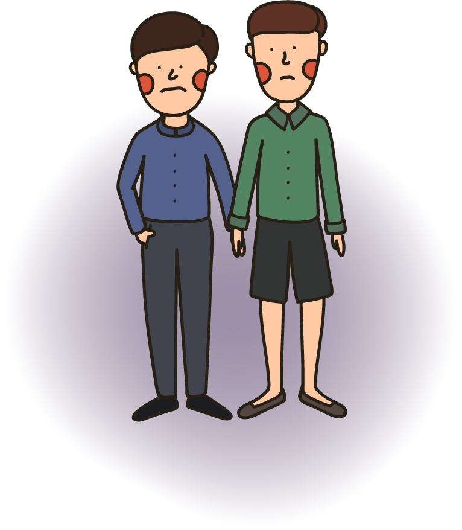

Jim 的成家夢
這是 Jim ，他今年35歲了。
Jim 一直渴望有一個自己的孩子，
但這個小小的夢想對他來說卻比
登天還難

因為 Jim 是男同志
男友 Jerry
看著身旁好友紛紛有了
小孩，
他也期待能跟 Jerry 一起養個孩子
想要有自己的
小孩，
Jim 跟 Jerry 只有以下幾個選擇
 
協議結婚
就是俗稱的假結婚，
找一個新娘結婚生小孩
但沒有愛的婚姻對全部人都不公平

收養
在台灣，
同志伴侶可以單身身分收養小孩
但還是會以夫妻優先，
同志伴侶成功收養的機率極低

人工生殖
在台灣，
人工生殖僅適用於不孕夫婦

所以 Jim 跟 Jerry 只能到國外尋求代理孕母
的幫助，
不但舟車勞頓還花了將近新台幣500萬元
在代理孕母的
協助下，
Jim 終於有了自己的小 baby
 
這趟歷程雖然辛苦，但能陪著
孩子們長大，
就是他們最大的幸福
設計/黃禹禛、工程師/王珣沛、腳本/葉瑜娟、林韋萱
2016.5.6
【專題】同志家庭與他們的孩子
走入同志家庭1》布丁男孩的2個媽媽
走入同志家庭2》同性伴侶怎麼養小孩？10個問題解惑
走入同志家庭3》其實我們都一樣
走入同志家庭4》原來我們是次等公民
走入同志家庭5》比利時的彩虹啟示
走入同志家庭6》我的T媽媽教我的，不是恨
【互動圖卡】男同志求子有多難？
前往專題頁

 
